Manchot de Humboldt
Cette édition est un travail sur les manchots de Humboldt tels qu’ils apparaissent dans l’eau sombre, visibles uniquement grâce à leurs tâches blanches.
Ces formes sont révélées par la découpe dans un papier noir, représentatif de l’eau. Les manchots ne sont jamais dessinés entièrement, seulement suggérés.
2025
Format 26 × 36 cm
Format 26 × 36 cm
 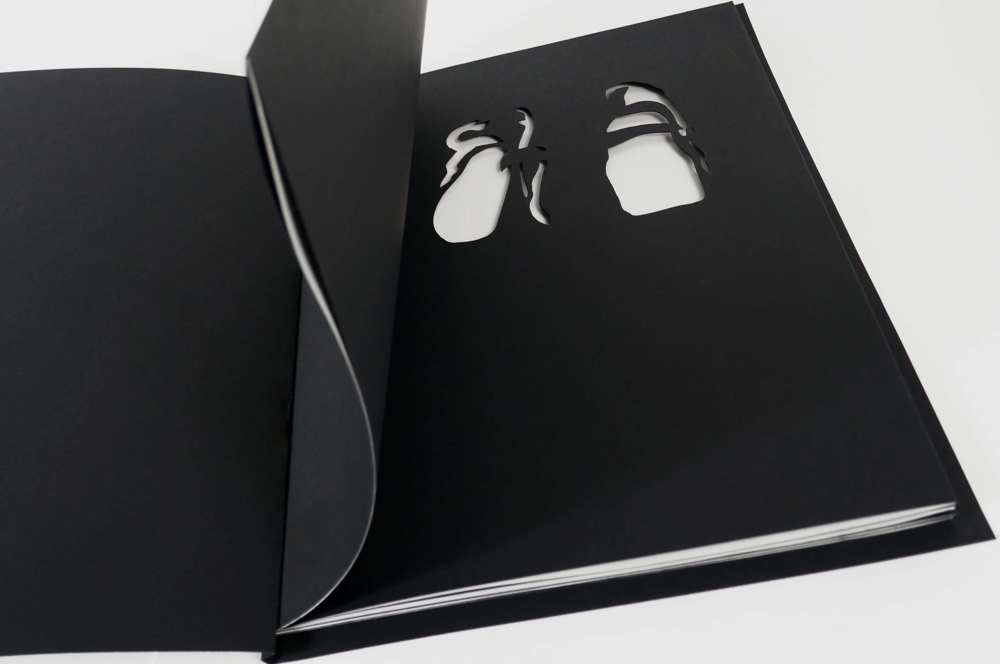
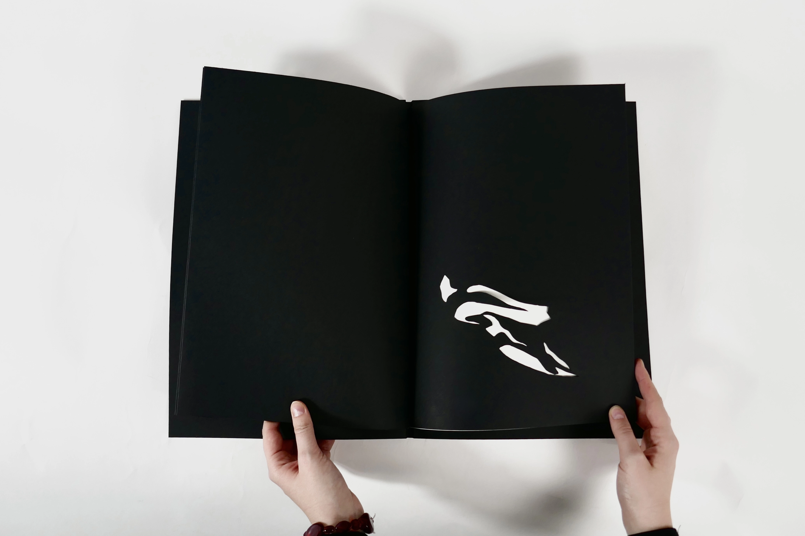
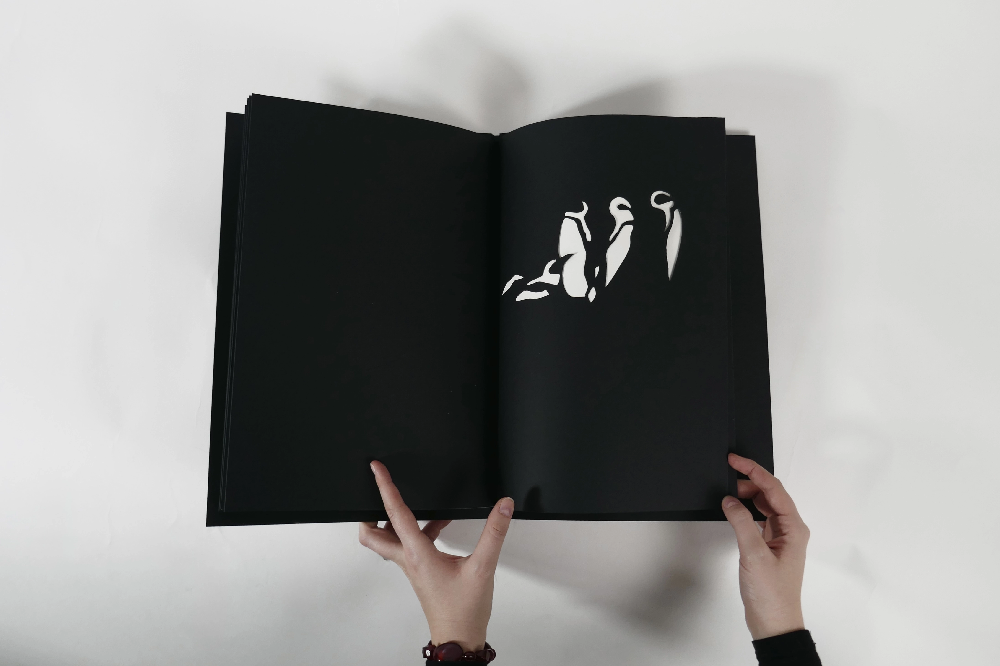
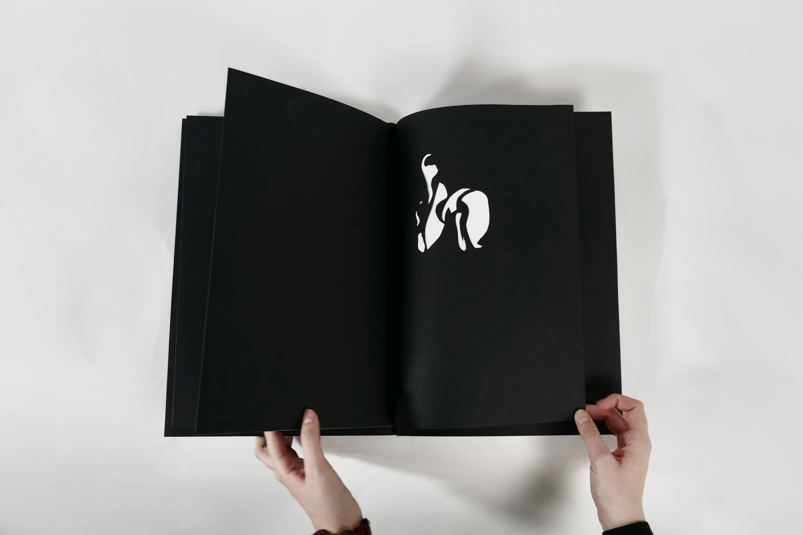
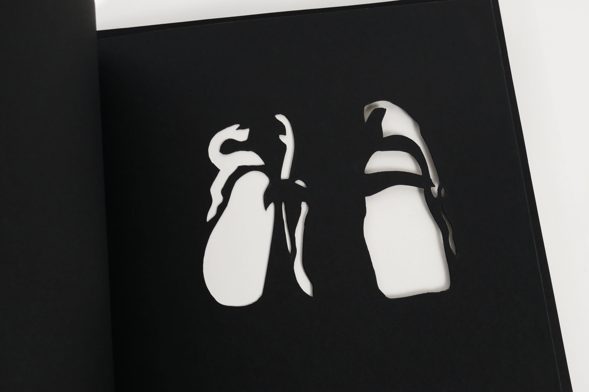
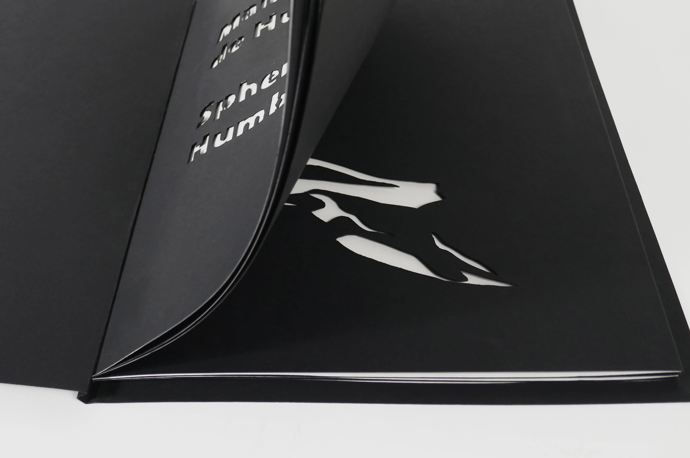
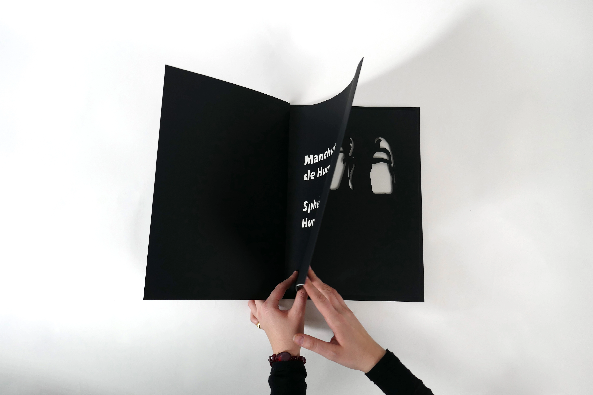
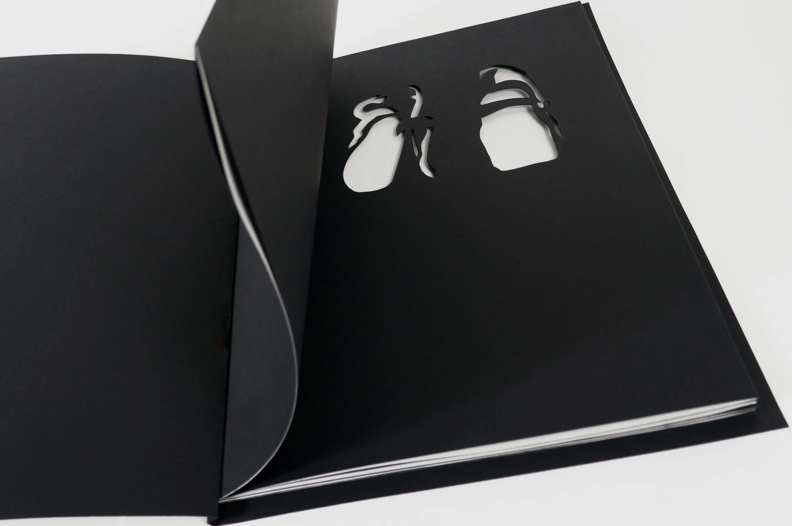
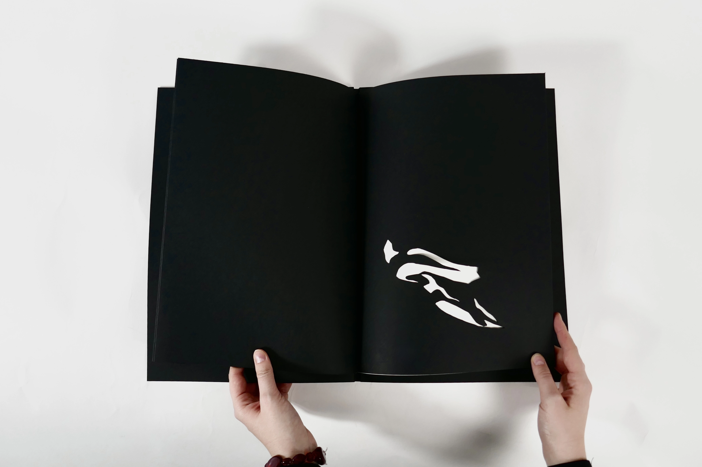
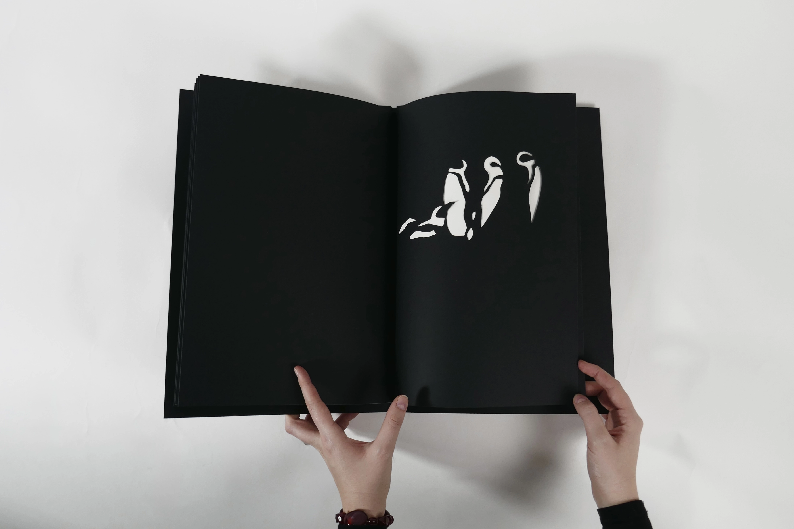
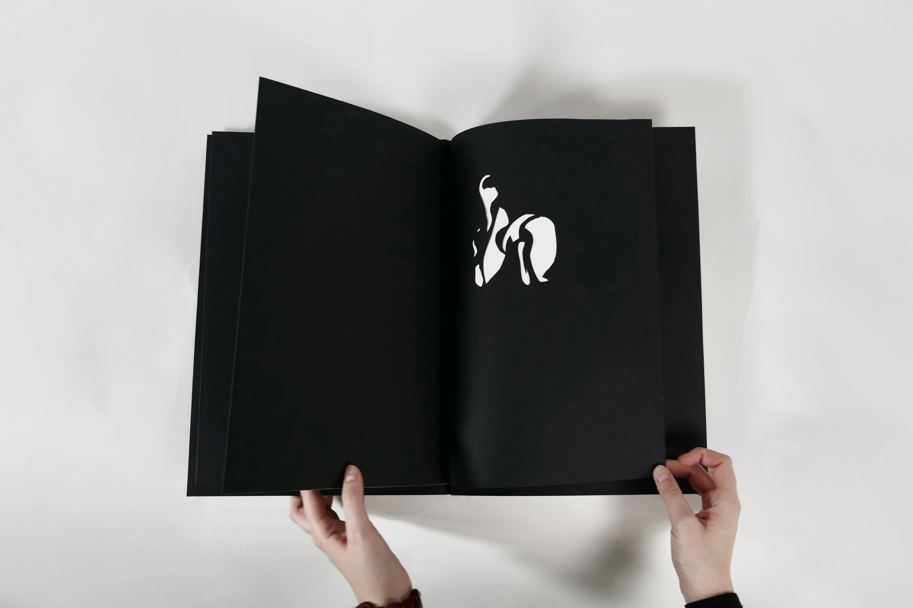
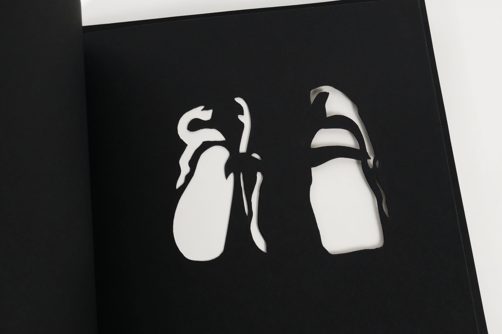
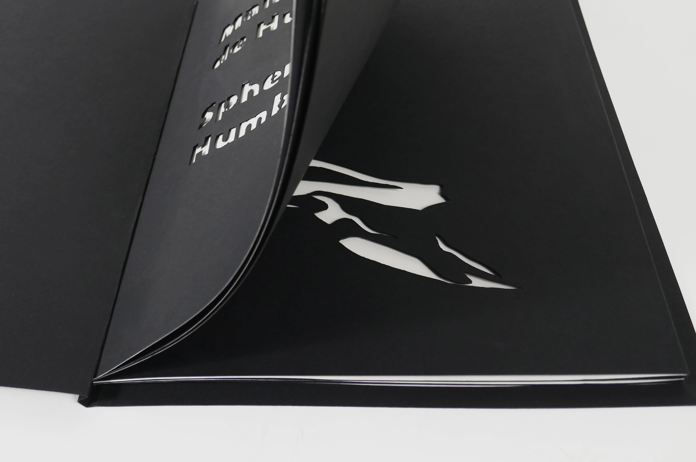
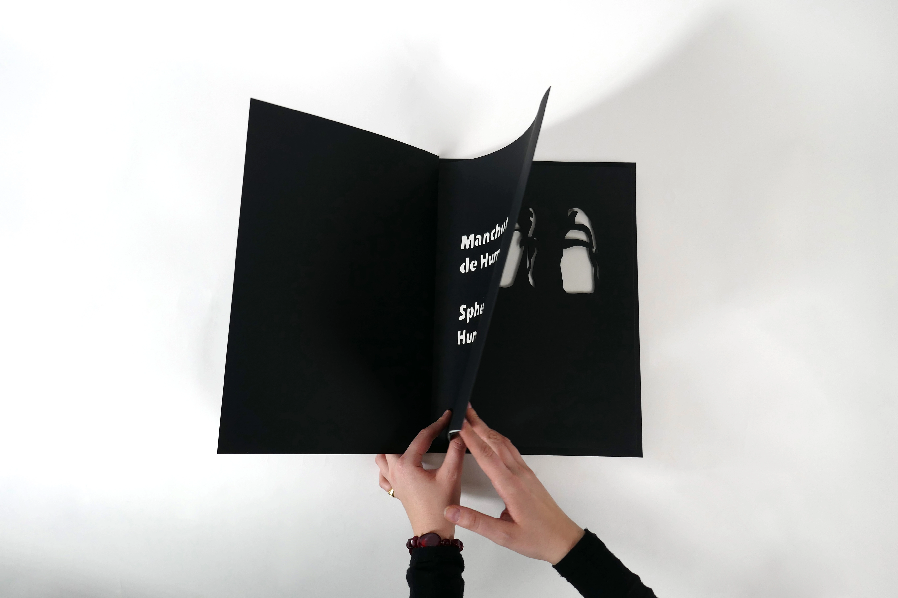